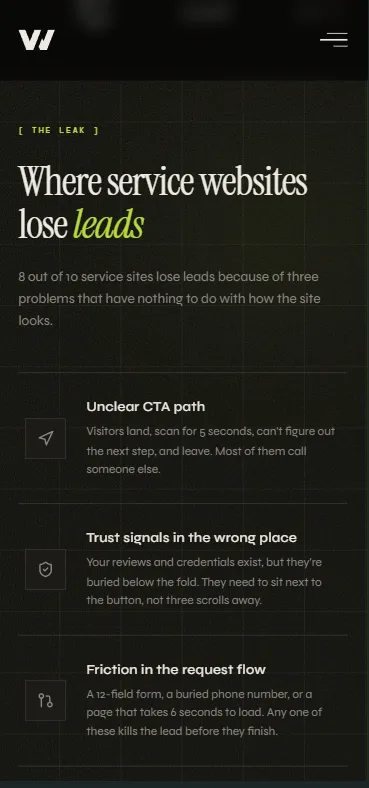
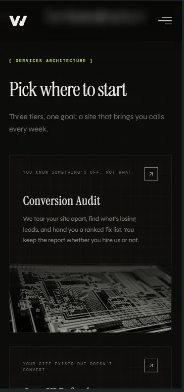
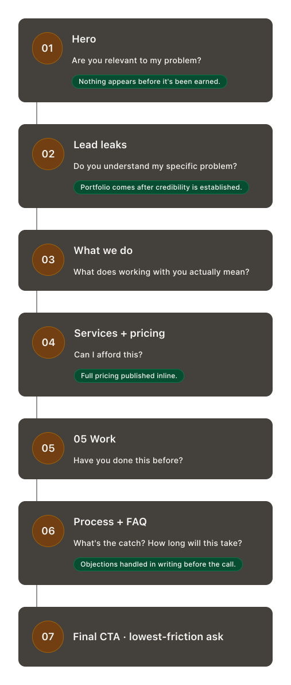
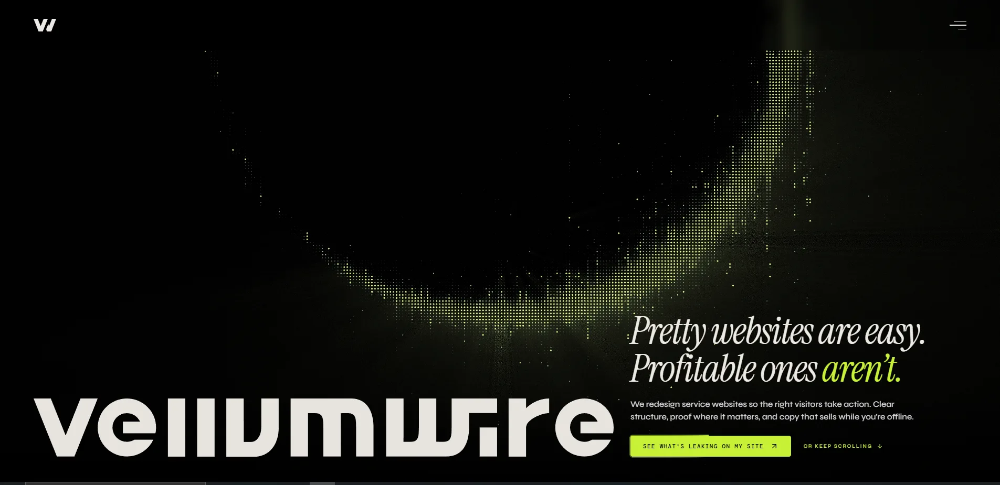
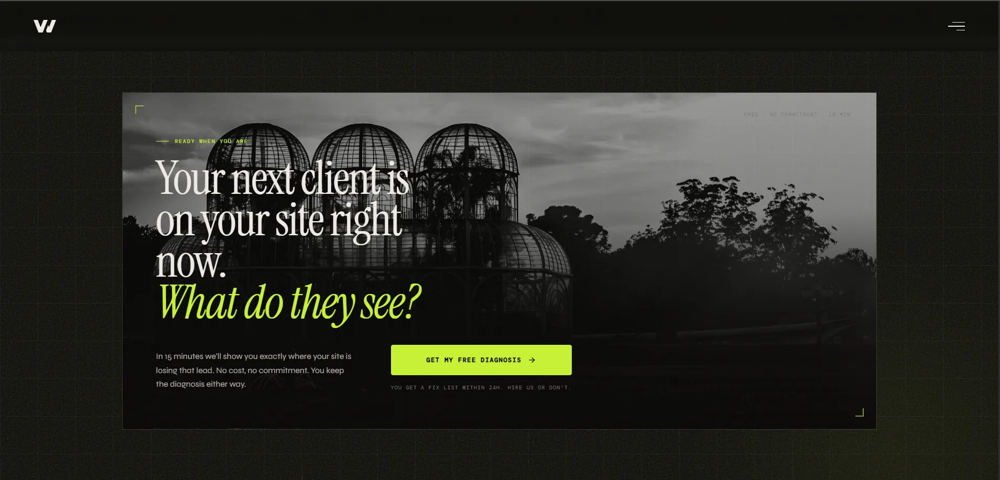
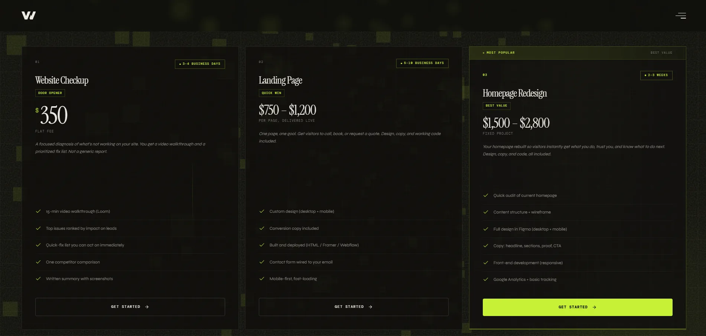
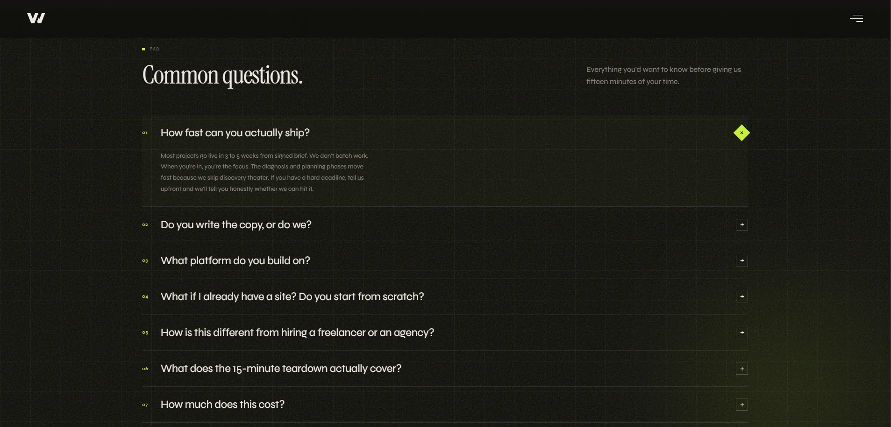
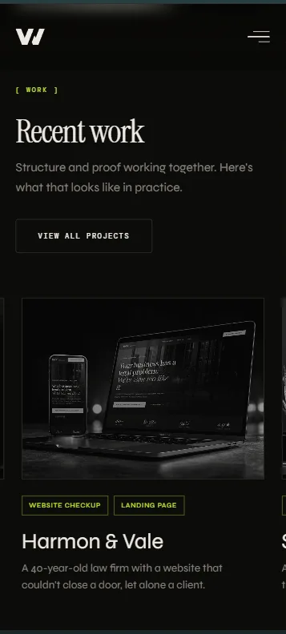

Um site de estúdio que fecha antes da ligação
A Vellumwire é um estúdio de web design focado em negócios de serviço que precisam de mais leads inbound. O primeiro projeto foi o próprio estúdio: construir um site capaz de comprimir um ciclo de vendas completo em uma única visita, para um público que já foi queimado por agências antes e é desconfiado por padrão.
~1k
sessões orgânicas por semana · sem anúncios pagos · sem presença social
0
investimento em anúncios · tráfego gerado inteiramente por intenção de busca e copy escrito para como os prospects realmente pesquisam
6
objeções reais de venda endereçadas no FAQ · cada entrada extraída de conversas reais com clientes

Estado atual · padrão comum de sites de agência
Sites de agência costumam abrir com uma grade de portfólio. Um prospect que chega pela busca ainda não decidiu se o estúdio resolve o problema dele. Mostrar trabalho antes de estabelecer relevância pede avaliação antes de confiança.
A situação
A Vellumwire é um estúdio de web design focado em um único resultado: fazer com que negócios de serviço que dependem de leads inbound consigam mais deles. Antes de o site existir, não havia presença web, posicionamento ou prova. O próprio estúdio foi o primeiro cliente.
O desafio não era só design. Era construir um site capaz de fechar leads sem uma ligação de vendas, para um público que já foi queimado por agências antes.
O cliente-alvo é um pequeno empresário com um site existente que parece aceitável, mas não gera ligações. Fazer com que confiasse em um estúdio novo do qual nunca tinha ouvido falar exigia estabelecer credibilidade antes de pedir qualquer coisa, sem um portfólio para mostrar no início.
O briefing que escrevi a partir disso: construir um site que vende como um bom vendedor venderia. Nomear o problema que o prospect já tem. Provar que você o entende melhor do que ele mesmo. Remover todo motivo para não dar o próximo passo, e fazer esse próximo passo parecer insignificante.
O diagnóstico
Antes de escrever uma única linha de copy, auditei o cenário competitivo e mapeei o processo real de decisão de um prospect frio avaliando um redesign.
Mercado
Portfólio primeiro, sempre
Todo concorrente começava com trabalho visual. Nenhum começava com o problema de negócio que o prospect já tinha. A relevância nunca era estabelecida antes de pedir uma avaliação.
CTA
Pedidos de alto compromisso
"Peça um orçamento" exige compromisso antes de o prospect decidir que tem interesse. A maioria dos visitantes sai sem converter. O estúdio nunca chega a saber que eles existiram.
Precificação
Ninguém publica
Todo contrato começa com uma etapa de "fale conosco para o preço" que filtra pequenos negócios antes mesmo de começarem. Isso também sinaliza que o preço é negociado na hora, o que corrói a confiança antes da primeira ligação.
As mesmas seis objeções apareciam em toda conversa de vendas anterior: prazo, custo, dependência de plataforma, se reconstruir ou ajustar, como é o processo, e se copy está incluído. Nenhuma delas era endereçada em nenhum site concorrente. Tratá-las por escrito antes da ligação era uma vantagem estrutural direta.


Posicionamento guiado pelo problema
O hero não mostra uma única tela. Abre com um headline de contraste e nomeia o resultado: os visitantes certos tomando ação. O portfólio vem depois de o visitante já ter decidido que o problema é real.
Um prospect que pesquisou "por que meu site não gera leads" precisa ver que você entende o problema antes de olhar para o seu trabalho. Relevância conquista o direito de mostrar prova.
A página segue uma sequência deliberada. Cada seção responde a uma pergunta que o visitante está fazendo naquele momento, na ordem em que faria numa ligação de vendas real.
A sequência reflete como um bom vendedor vende. Quando o visitante chega ao CTA final, ele já confirmou que o problema é real, entendeu a abordagem, viu a precificação e teve suas objeções respondidas. O pedido no final é o menor passo da página.


A oferta
O CTA principal em todo o site é um diagnóstico gratuito de 15 minutos do site: uma chamada de tela em tempo real onde eu identifico bloqueios de conversão na hora. Sem pitch, sem apresentação, sem armadilha de contrato fixo. O prospect fica com a lista de correções, contrate o estúdio ou não.
CTA padrão: "Contrate-nos" ou "Peça um orçamento"
Pede um grande compromisso de alguém que acabou de chegar e ainda não decidiu que tem interesse. A maioria dos visitantes sai sem converter. O estúdio nunca chega a saber que eles existiram.
CTA Vellumwire: diagnóstico gratuito de 15 min
Qualquer pessoa com um site que não converte vai aceitar 15 minutos gratuitos para descobrir por quê. O CTA reduz o compromisso percebido a quase zero enquanto cria valor genuíno. Também funciona como uma ligação de vendas: o diagnóstico demonstra expertise antes de qualquer proposta ser feita.
Ninguém quer "contratar um designer". Mas um empresário que suspeita que o site está custando leads vai aceitar uma sessão gratuita e sem compromisso para descobrir o que está errado. A oferta corresponde ao estado real do visitante no momento em que chega: consciente de um problema, incerto sobre a solução, ainda não pronto para gastar dinheiro.

Transparência de preço
O preço completo é publicado no site: de uma revisão de site por $350 a um pacote completo de marca e web por $8.000. Faixas exatas, sem "fale conosco para saber o preço".
Estúdios que escondem preço normalmente estão negociando contra si mesmos. Para um pequeno empresário que já foi queimado antes, um estúdio que mostra as cartas transmite confiança antes mesmo de falar com alguém.
Publicar preços filtra leads por orçamento antes da primeira conversa. Os clientes que entram em contato já sabendo o preço são mais fáceis de fechar e mais rápidos para começar. Os que desperdiçariam uma ligação de descoberta por estarem fora do orçamento são filtrados antes de agendar.

FAQ a partir de objeções reais
Cada entrada do FAQ veio de uma objeção real que apareceu em múltiplas conversas de vendas. Os seis temas que sempre voltavam: prazo, dependência de plataforma, propriedade do copy, se reconstruir ou ajustar, o que o diagnóstico de 15 minutos realmente cobre, e o que acontece se o cliente pagou recentemente por um redesign em outro lugar.
Um FAQ construído a partir de objeções reais lê de forma diferente de um construído a partir do que o estúdio quer dizer. Prospects reconhecem as próprias perguntas. Quando isso acontece, sinaliza que o estúdio já lidou com a situação específica deles antes, que é exatamente o que um comprador desconfiado precisa ver antes de se comprometer com uma ligação.
Objeções que não são tratadas no site são levantadas na ligação. Isso atrasa a decisão e introduz dúvida no pior momento, quando o prospect já está falando com o estúdio e tem algum grau de interesse. Tratá-las por escrito antes da ligação avança a conversa.

Resultado
Aproximadamente 1.000 sessões orgânicas por semana. Sem anúncios pagos. Sem presença no LinkedIn. Sem marketing de conteúdo no lançamento. Tráfego gerado inteiramente por intenção de busca: estrutura, meta tags, schema markup e copy escrito para como os prospects realmente pesquisam.
~1k
Sessões orgânicas por semana em regime estável. Zero aquisição paga, zero distribuição social.
Analytics de busca
0
Saída a partir da página de preços. Visitantes que veem o preço permanecem e exploram mais.
Observação comportamental
6
Objeções de venda tratadas por escrito antes de qualquer ligação. A descoberta começa em outro ponto.
Processo de vendas
4sem
Tempo do arquivo em branco ao site indexado e convertendo. Estratégia, copy, design e front-end em um único contrato.
Duração do projeto

O que o site faz que não é capturado em um número: um prospect frio que o encontra via busca pode ir da descoberta até agendar um diagnóstico sem um único ponto de contato com o estúdio, exatamente o objetivo que o briefing definiu.
O que eu faria a seguir: conteúdo de estudo de caso direcionado a verticais específicas (escritórios de advocacia, prestadores de serviço, clínicas) para capturar tráfego de cauda longa com intenção mais alta; um heatmap na seção de preços para entender onde os prospects desistem antes de converter; uma seção de Insights com conteúdo original para acumular autoridade orgânica ao longo do tempo.
Reflexões
Escrever levou mais tempo do que desenhar. Posicionamento guiado pelo problema exige saber quais problemas os clientes sentem como urgentes o suficiente para agir, não apenas reconhecer. O copy passou por mais iterações do que o layout. Na próxima, eu escreveria o posicionamento antes de abrir o Figma e deixaria que ele guiasse a estrutura, em vez do contrário.
A clareza foi a verdadeira alavanca de crescimento. Sem construção de backlinks, sem calendário de conteúdo, sem presença social no lançamento. O crescimento orgânico veio de ser o único estúdio nesse espaço cujo site descrevia o problema que o prospect já estava sentindo. Posicionamento é uma estratégia de distribuição.
Uma janela de 48 a 72 horas ainda separa o interesse de uma resposta qualificada. Um formulário de contato mais uma descoberta assíncrona deixa essa janela aberta. Um fluxo de entrada curto que pré-qualifica leads e reduz o tempo até a proposta fecharia essa janela sem adicionar uma ligação de vendas.
Esse site também é a descrição mais clara de como a Vellumwire funciona. Eu cuido das conversas com o cliente, pesquisa, posicionamento, UX e design em todo projeto deste portfólio. O Afonso cuida de implementação, hospedagem e performance. Duas pessoas, não uma agência fingindo ser uma.
Vamos conversar
Aberto pra próxima posição.
Vamos conversar.